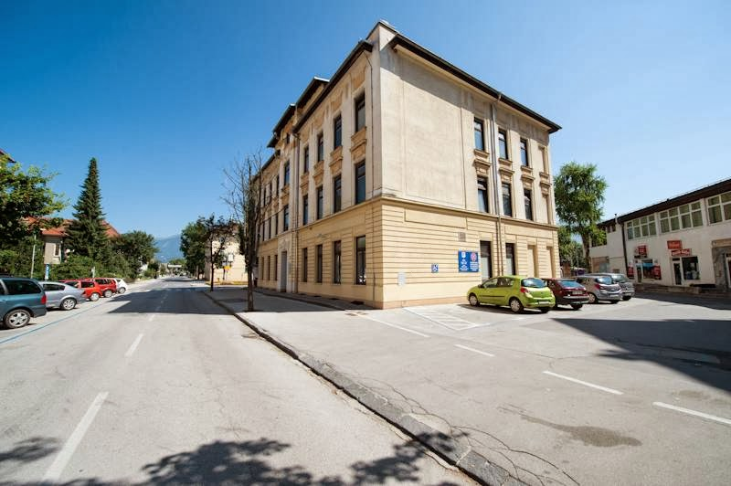
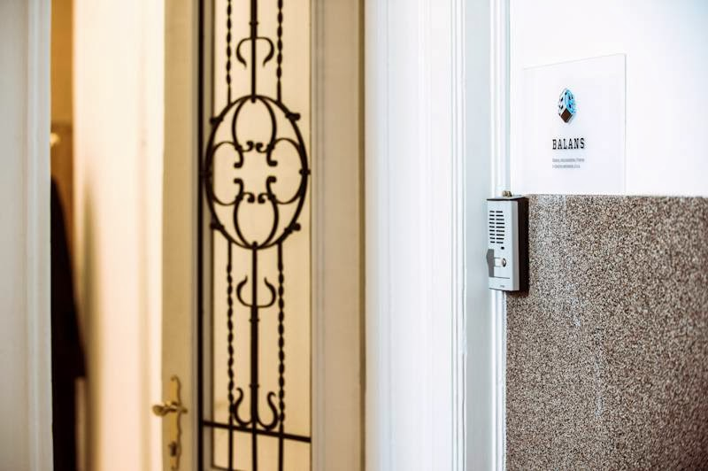
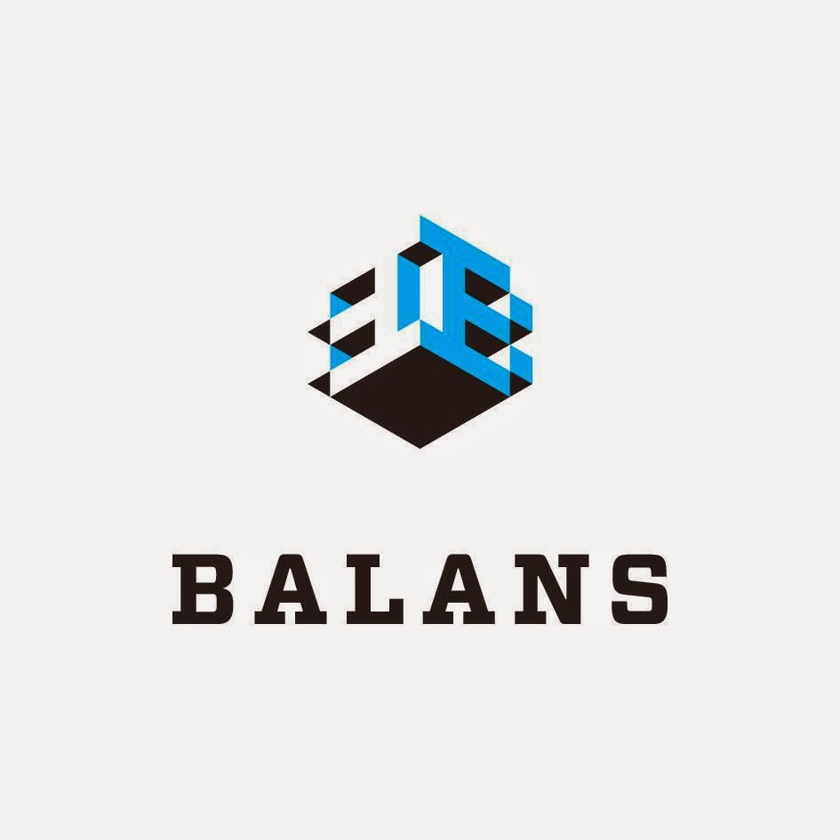

Računovodske storitve
Podjetje Balans, d.o.o. se ukvarja z računovodskimi dejavnostmi za pravne in fizične osebe.

Bled
Računovodske storitve v Sebenjah pri Bledu
Za informacije in dogovor o storitvah je na voljo telefonski kontakt.
O podjetju
Balans, d.o.o. je podjetje, ki se ukvarja z računovodskimi in finančnimi storitvami. Nahaja se na naslovu Sebenje 57a v okolici Bleda. Podjetje nima spletne strani, zato so osnovne informacije dostopne le preko javno objavljenih podatkov. Za vse dodatne informacije in vprašanja je na voljo telefonska številka podjetja.

Storitve
Podjetje Balans, d.o.o. se ukvarja z računovodskimi dejavnostmi za pravne in fizične osebe.
Nudi različne finančne storitve, ki jih lahko preverite preko telefonskega kontakta.
Za vsa vprašanja ali dogovore je podjetje dosegljivo na objavljeno telefonsko številko.

Ponudba
Podjetje nudi računovodske in finančne storitve. Ker spletne strani ni, poteka komunikacija in dogovor o storitvah izključno po telefonu.
Kontakt
Za več informacij ali dogovor o storitvah pokličite na telefonsko številko. Tako boste najhitreje prejeli odgovore.
Lokacija
Balans, d.o.o. se nahaja v naselju Sebenje pri Bledu. Naslov je Sebenje 57a. Okolica je mirna in dostopna z avtomobilom.
Sebenje 57a, 4260 Bled, Slovenia
(04) 531 57 87